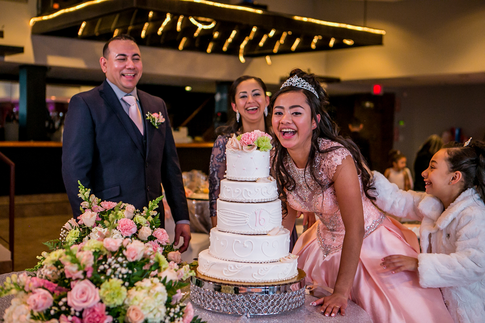
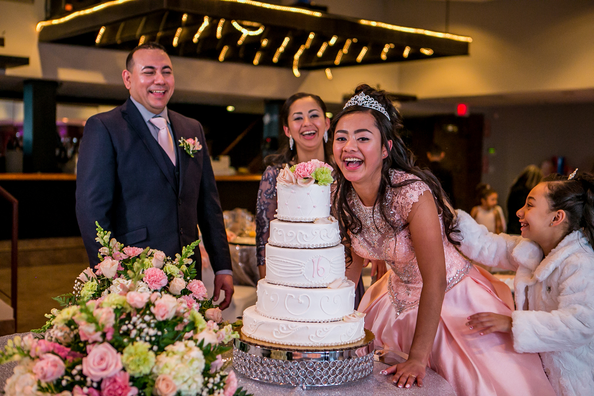

SOMOS EL EQUIPO FELIZITY
Muchas gracias por visitar nuestra página y apreciar nuestro trabajo. Estamos en Boston, MA desde 2012. Profesional, espontanea pero detalladamente ofrecemos atenta dirección a nuestros clientes para ganar su confianza y de esta forma, muy natural y relajadamente nos permitan capturar sus emociones, transportarlas a una fotografía y que esos momentos especiales perduren para siempre, así como también puedan disfrutar su celebración o de la sesión fotográfica de principio a fin. Siempre creamos el máximo valor de los recursos a nuestra disposición para lograr excelentes resultados satisfactorios y efectivos.
Si se acerca esa fecha especial para ti o tu familia, si necesitas un retrato profesional para tu portalio de negocios, o deseas una sesión fotográfica en esta estapa en la vida de tu familia, por favor contáctanos para una cuota de servicios, para nosotros será un placer poder ser parte de aquellos momentos u ocasiones que son muy importantes para ti. Conoce nuestro extenso portafolio en felizityphoto y Síguenos en Instagram @felizityphotos
QUINCEAÑERAS


 

DISEÑOS
BERNARDO ALMEIDA
Ber Almeida es un fotográfo y diseñador gráfico que emigró de su natal Colombia en 2002 y se radicó en Boston. Donec eleifend augue mi, nec interdum ante vehicula in. Proin volutpat ante sapien, eget tincidunt augue condimentum vel. Quisque ac imperdiet sem. Ut malesuada tellus lectus, sed tempor nibh imperdiet sodales. Nulla porta, erat nec rutrum pellentesque, eros lectus condimentum metus, eget tincidunt diam massa ut eros. Sed facilisis turpis magna, et aliquam tellus